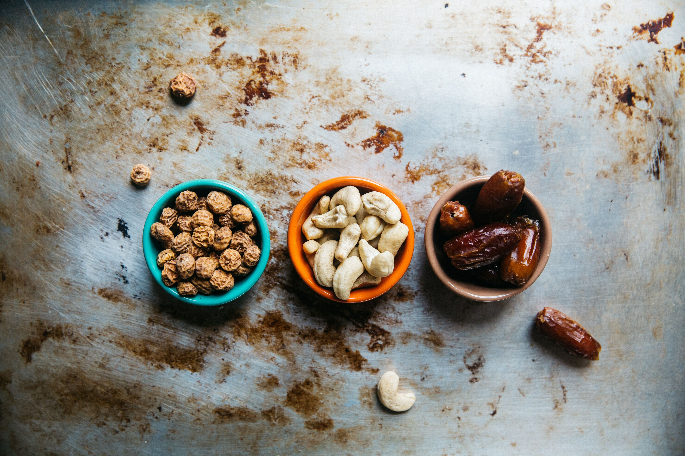

A nutrição na Ayurveda tem como objetivo principal otimizar a digestão (Agni), que vai além de
nutrir o corpo
físico, mas também a mente e espírito. Com esta visão amplificada dos alimentos e seus efeitos em nosso
Agni, a
Ayurveda relaciona à alimentação outros fatores como origem e cultivo, sazonalidade, localidade e preparo
do
alimento; ambiente da refeição, fase da vida e idade do indivíduo, além de características regionais e culturais
e, principalmente, a prãna - energia vital que permeia todas as formas de vida. Assim, quando adequados ao nosso
organismo contribuem para o bem-estar, clareza, longevidade, genialidade, felicidade, satisfação, força e
intelecto que são sustentados pelo que digerimos.
Acompanhamento Individual
Desenvolver, através da construção do autoconhecimento, a capacidade de realizar, em qualquer situação, as
melhores escolhas na sua alimentação (vegetariana ou não)
Transição para Alimentação Vegetariana
Suporte nutricional para transição saudável e consciente, através de acompanhamento individual, porém com
olhar para a realidade vivida, meio familiar, social e ambiental.
Introdução Alimentar em Bebês
Orientação sobre como realizar a transição do aleitamento materno para a alimentação, com apoio nas escolhas
dos alimentos e como proceder até os dois anos de idade ou mais.
Atendimento Familiar
Com objetivo de criar hábitos saudáveis em relação à alimentação para todos que convivem, o acompanhamento
leva em consideração a individualidade de cada um e a harmonia do coletivo.

Apenas 10 passos para começar uma alimentação saúdavel
1
Fazer a base da sua alimentação de alimentos in natura ou minimamente processados
2
Utilizar óleos, gordura, sal e açúcar em pequenas quantidades ao temperar e cozinhar alimentos
3
Limitar o consumo de alimentos processados
4
Evitar o consumo de alimentos ultraprocessados
5
Comer com regularidade e atenção, em ambientes apropriados e, sempre que possível, com companhia
6
Fazer compras em locais que ofertem variedades de alimentos in natura ou minimamente processados
7
Desenvolver, exercitar e partilhar habilidades culinárias
8
Planejar o uso do tempo para dar à alimentação o espaço que ela merece
9
Aguarde apenas 15 minutos e receba a refeição escolhida na porta da sua casa!
10
Ser crítico quanto a informações, orientações e mensagens sobre alimentação veiculadas em propagandas
comerciais
Saúde no prato é incrível! Eu sou uma pessoa super ocupada, com pouco tempo para cuidar da
minha alimentação, mas tudo mudou com a equipe da saúde no prato que assumiu essa função.
Alberto
Saltonetto
Comida saúdavel rapidinho na porta da sua casa! A melhor opção para mim e para vc...
principalmente para mim que odeio cozinhar e que já perdi três casas após incendia-las
tentando cozinhar.
Joicelaine
Carneiro
Eu estava procurando por uma alimentação saudável e que coubesse no meu bolso e encontrei...
Saúde no Prato, melhor custo-benefício ever! Muito mais que alvace, eles tem rúcula e
repolho também!
Pedro Antunes


Alberto Saltonetto
Joicelaine Carneiro
Pedro Antunes